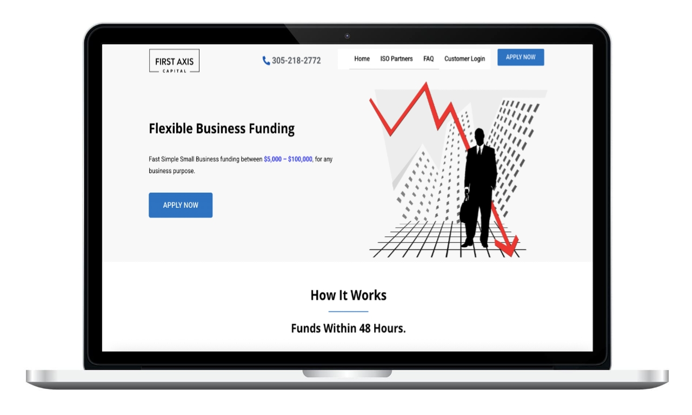

High Quality Meats
An e-commerce platform with order management, payments, and a custom admin dashboard.
GOURAB MAL · SENIOR SOFTWARE ENGINEER
I develop web applications, APIs, and AI-powered features that bring ideas into everyday use.
5+ years of experience across Laravel, PHP, Node.js, and Vue.js projects. Based in West Bengal, India.
Vue.js · JavaScript
Laravel · PHP · Node.js
MySQL · MongoDB · AI
Laravel · PHP · Node.js · Vue.js · MySQL · n8n
01 / SELECTED WORK
A selection of web applications, integrations, and tools I’ve worked on. Explore the details behind each project.
An e-commerce platform with order management, payments, and a custom admin dashboard.

Electronics commerce with inventory management, regional payments, and SMS notifications.

A CMS website for patient feedback, medical expert assessments, and healthcare information.

Automated screenshot comparison and alerts for visual changes across websites.
A custom plugin bringing Claude-powered article generation and SEO suggestions into the WordPress dashboard.

A CMS website with funding requests, partner onboarding forms, and centralized content management.
02 / TECHNICAL SKILLS
Backend development at the core, with experience across frontend interfaces, data, and integrations.
PHP, Laravel, Node.js, Express.js, REST APIs, WordPress, WooCommerce
Vue.js, Nuxt.js, JavaScript, HTML5, CSS3, Bootstrap, jQuery, AJAX
MySQL, MongoDB, Redis, SQL optimization, Multi-tenant SaaS, Microservices
Laravel Reverb, WebSockets, Role-based access control, Two-factor authentication
Generative AI, AI agents, n8n, Claude, Gemini, RAG pipelines, Vector databases, MCP workflows, Prompt engineering
Pest, Postman, Swagger / OpenAPI, Docker, Git, GitHub, Bitbucket, Sentry
Jira, Slack, ClickUp, Asana
Lovable, CheckoutChamp, Konnektive, Sticky CRM, Vrio, 29Next, Klaviyo, Maropost
Stripe, PayPal, Razorpay, KNET, MyFatoorah
Twilio, AWS SES, Firebase Cloud Messaging (FCM), SMS Gateway APIs, Telegram Bot API
03 / EXPERIENCE
Senior Software Engineer – Level 1
Senior Engineer – Web
Web Developer
04 / A LITTLE ABOUT ME
I’m Gourab, a software engineer who enjoys understanding how things work—and making them work together.
Over the past five years, I’ve worked across e-commerce, healthcare, and travel applications. Most recently, I contributed to backend modules in an existing multi-tenant SaaS platform built with Laravel at Innofied Solutions.
Outside work, I write articles, explore new technologies, and enjoy creative writing through poems and stories.
Mallabhum Institute of Technology
2020 · DGPA 8.81
English · Hindi · Bengali
05 / CONTINUOUS LEARNING
Courses that complement my work in web development and AI integrations.
HAVE A ROLE OR PROJECT IN MIND?
I’m open to full-time and contract opportunities in web development, backend engineering, and AI integrations.
gourabmal4@gmail.com